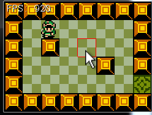

Using the mouse to move will involve some rudimentary pathfinding / AI. We're going to implement the simplest path-finding possible. Usually, when doing a mouse to move you would use the A* algorithm to find the shortest path, however i have that lesson planned for later.
Let's make a new project, call it MouseToMove and get this project up to par with the OpenTheDoor section of the writeup. We're going to work from here.
We don't care about items, enemies or bullets. We just want to be able to walk around with a mouse. And i'm hoping this means typing a little less boiler plate code.
We are starting off from a state before we did the tile size refactor in the isometric section (obviously), but i don't like having 30 all over the place. I made a new public static readonly variable in Game.cs called TILE_SIZE and refactored the rest of the project to use this instead of the hard coded 30
You can keep hard coding 30, or do this refactor too, it's up to you. For the remainder of this article i'm going to be refering to the size of the tile by this new constant in Game.cs
Clicking on tiles is usually obvious enough, but having a mouse indicator is always a nice touch. We're going to figure out which tile the mouse is over and highlight it with a red outline.
In Game.cs, make a new Point variable, call it cursorTile. In Update, we're going to set this. Set it to the tile that the mouse is on. Because our tiles are based on a grid of 30, if a mouse is at 45,67 it's tile would be 2,3.
In the render function, go ahead and draw a red rectangle around the selected tile. Remember to bring the tile from "tile space" back into "world space". We don't have a method to draw a square outline, you will have to do it with 4 lines. Here is what this should look like:

Note: Right now you probably just divided the mouse position X and Y by tile size, that should work very well for this demo. Be aware however, if you add scrolling, you will have to account for the scrolling offset in the mouse position!
Inside PlayerCharacter.cs make a new variable:
protected Point targetTile = new Point(2, 3);
This variable represents the tile we want to walk to (in tile space). Publicly, we don't need any way to see the value of the variable, but we do need a way to set it. Let's add a setter function:
public void SetTargetTile(Point target) {
targetTile = new Point(target.X, target.Y);
}
Next, in the Update method, after getting a local input manager instance, find the tile that the player is currently in:
Point currentTile = new Point((int)(Position.X) / Game.TILE_SIZE, (int)Position.Y / Game.TILE_SIZE);
At this point we know the current tile of the player and the target tile of the player. We also have code to move the player on screen with the keyboard. What we need to do is to change the movement conditions.
Instead of looking at the keyboard, the movement conditions should look at the current and target tiles of the player.For example, if player tile is 5, but target tile is 2 the player should just move left!
Change this line:
if (i.KeyDown(OpenTK.Input.Key.A) || i.KeyDown(OpenTK.Input.Key.Left)) {
to this:
if (targetTile.X < currentTile.X) {
And this line
else if (i.KeyDown(OpenTK.Input.Key.D) || i.KeyDown(OpenTK.Input.Key.Right)) {
to this:
else if (targetTile.X > currentTile.X) {
Chang the up and down if statements on your own. We call this broad phase movement, because it gets the player to the correct tile, not the correct pixel. We will add narro phase movement soon.
In Game.cs, set the players target tile if a tile is clicked. We only want to set this target if the tile being clicked is walkable:
if (InputManager.Instance.MousePressed(OpenTK.Input.MouseButton.Left)) {
if (currentMap[cursorTile.Y][cursorTile.X].Walkable) {
hero.SetTargetTile(cursorTile);
}
}
Run the game, clicking around the map should cause the hero to walk to the selected tile! There are two problems. First, when you are behind a blocking tile and you click straight ahead the player will just forever walk into the obstacle. This is just dumb ai. We are not going to fix that in this lesson.
The second, and perhaps more glaring issue is that the player is ok walking right or down. However walking left or up the player stops just one tile short of the target. This is because our registration point is in the top left of the character and the top left pixel is in the target tile already.
The only way to solve our hero stopping one tile short is to add more fine grained collision controls. The if / else if for x movement, we're going to add another else if to that.
This new else if checks how far the player is from the target x / y position (pixel, not tile). If he is close enough, he will be snapped to the pixel, if not he will just continue moving towards it.
else if (Position.X != currentTile.X) {
// More than two pixels away, walk
if (Math.Abs(Position.X - currentTile.X * Game.TILE_SIZE) > 2) {
SetSprite("Left");
Animate(deltaTime);
Position.X -= speed * deltaTime;
}
// Two pixels away, snap!
else {
Position.X = currentTile.X * Game.TILE_SIZE;
}
}
Dont forget to do the same thing for the y axis! Run the game, clicking around, link should always walk to the right tile. Evenif he takes a dumb route.
Now clicking aroudn moves us correctly, but what happens if you walk into a door? You try to walk to the door tile on the next map! This needs to get fixed.
Find the code that makes the hero walk trough a door and shows the new room. In that code, set the heros target tile to be right outside the door (the specified target position). That should cuase the player to just switch rooms.
I purposley left the instructions for that last part very vague. I want you to think about this, look at your code and try to solve the problem yourself. If you need any help or guidance i'm aways here.